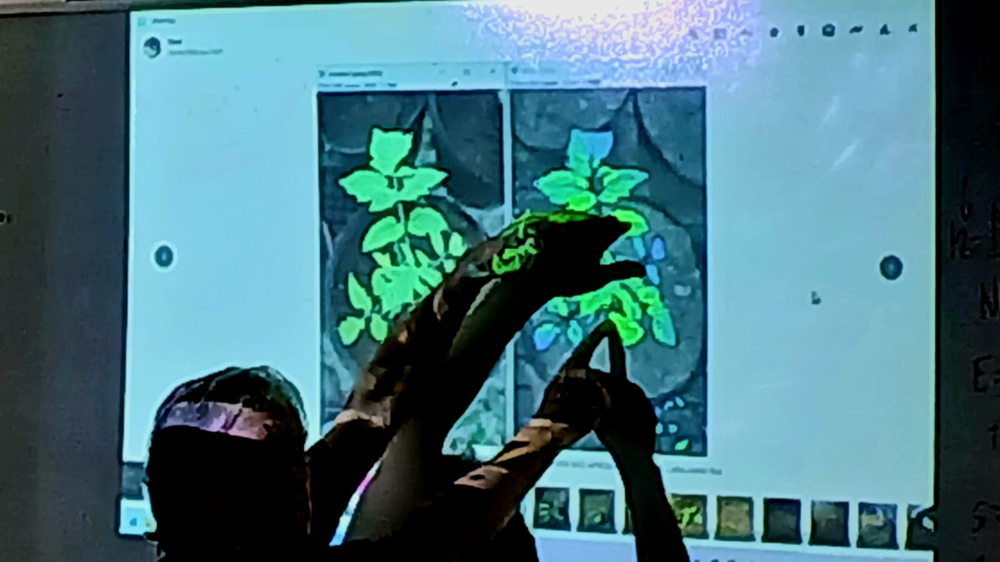

ANÁLISE ESPECTRAL · MATERIAIS ORGÂNICOS E INORGÂNICOS
Toda amostra tem
uma assinatura.
Nós a lemos ao vivo.
Projeto acadêmico que aplica uma nova tecnologia de análise a materiais orgânicos e inorgânicos, com experimentos conduzidos e transmitidos em tempo real — do preparo da amostra ao resultado final.

Figura 1 Página inicial do Lab. Online, destacando a proposta de leitura espectral em tempo real de amostras orgânicas e inorgânicas.
EXPLORE O LABORATÓRIO
A ciência que se vê
Sobre o projeto
Os três pilares: materiais orgânicos, inorgânicos e transmissão aberta.
Método e técnicas
O fluxo de 4 etapas e as ferramentas: ImageJ, VibraImage, speckle laser e plasma frio.
Transmissões
O último experimento com capítulos e legendas, e o arquivo das transmissões anteriores.
Equipe
Quem idealiza, orienta e constrói o Laboratório Online.
Contato
Canal no YouTube, e-mail e telefone. Sugira o próximo material a ser analisado.